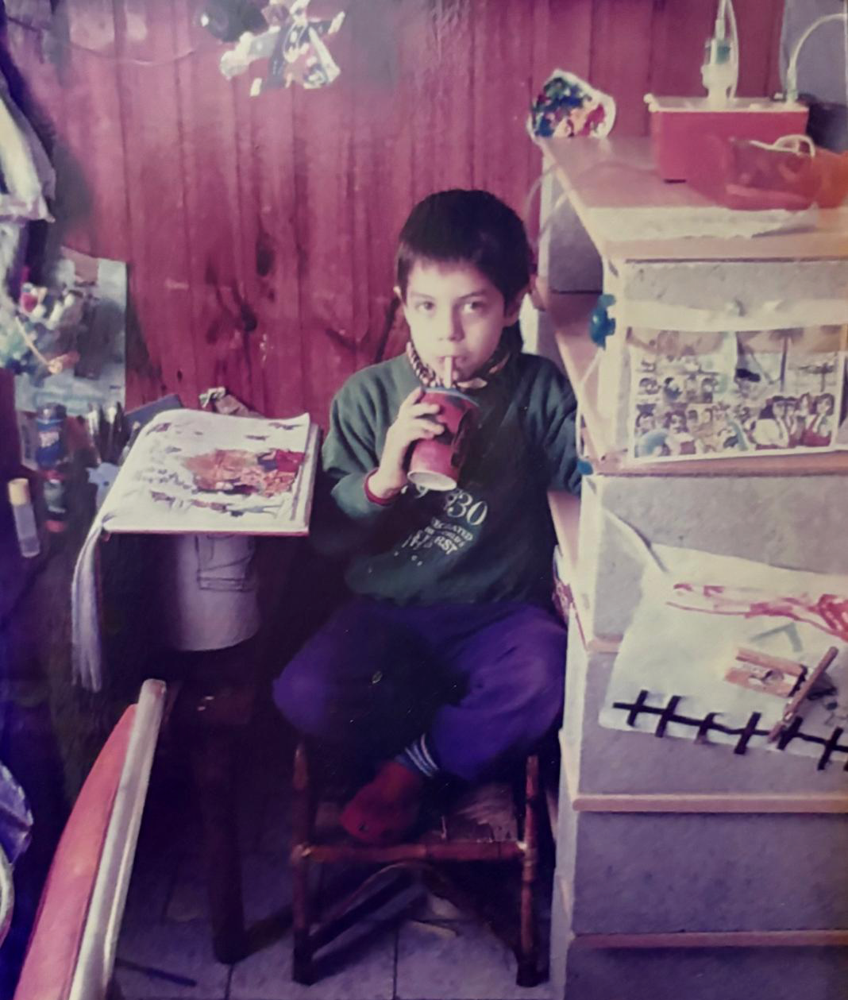

DISEÑO:
EL ABISMODE LO POSIBLE
↓Desde chico siempre me gustó dibujar, imaginar mundos y representarlos. Al crecer encontré primero en el diseño gráfico y después en la edición de video una forma de darle lugar a esa necesidad de crear. Por eso fui a un colegio técnico orientado en diseño y comunicación. Allí le di a mi vocación el marco necesario para poder vivir de esto. La carrera que estudio hoy, Tecnología Digital, se centra en buscar soluciones y crear algoritmos. Nunca dejé de abordarlo desde la mirada del diseño. Sin embargo, por momentos siento que en esta sistematización algo se pierde.

Mi viejo era artesano, muy orgulloso de su oficio. Recuerdo que, cada vez que alguien lo quería elogiar frente a mí, me decía: “Él es un artista”. Siempre me hizo ruido esto. Nunca escuché que de un artista dijeran que por ser tan bueno era un artesano. Más bien esto aparece como un insulto. Una impugnación de mercantilización del arte. Noté con el tiempo que con el diseño pasa lo mismo. El diseño y la artesanía aparecen, en ciertas cosmovisiones, como prácticas subordinadas al valor de cambio, en contraposición con una imagen del arte como actividad autónoma de esas determinaciones. Esto me irrita porque despolitiza la misión de estas disciplinas. No solo las fronteras entre estas áreas son difusas, sino que aquello que más me convoca de ellas es precisamente lo que comparten. ¿Qué es lo que más me gusta del diseño? Su capacidad, (y quizás también su necesidad), de transformar el mundo. Sobre eso quiero reflexionar en este ensayo. Porque para transformar el mundo primero hay que ser capaz de imaginarlo distinto. Y es justamente esa posibilidad de imaginar lo que está en disputa.
Permanecer en el problema
Creo que durante la cursada lo que más me costó fue sostener la idea de no caer en definiciones apresuradas. Dar espacio a la investigación y no ceder a la pulsión por elegir un camino, una mirada o un paradigma concreto con el que encarar el problema. En principio esto me hacía sentir impotencia. Cada vez que se me presenta un problema tengo el reflejo automatizado de solucionarlo con las herramientas que tengo a la mano, con lo que aprendí hasta ahora que funciona. En esta frustración aparece una idea: elegir demasiado rápido una mirada también significa determinar de antemano qué problema estoy viendo. Kolko en el capítulo 2 de Exposing the magic of design plantea la idea de framing. El framing no debe traducirse sólo como punto de vista, porque esto deja afuera la idea del largo plazo. El autor plantea este concepto como una vida de experiencias, self-image, y sensibilidad del diseñador por lo que yo acotaría que el framing en el cual uno constituye su visión de mundo es también la identidad propia, que no es inmutable pero tampoco es necesariamente flexible. Es importante notarlo (y nombrarlo) porque esto determina cómo aparecen los datos y cómo se configura la situación alrededor de un problema. En ese sentido, la mirada planteada en el primer párrafo es “mi framing”. El concepto del autor dialoga con esto y subraya, cómo esta tendencia resolutiva restringe el universo de posibilidades y abordajes que puedo concebir.
Soportar esta incomodidad termina siendo crucial en determinados momentos. Esperar: permanecer en el problema. Resolver implica inevitablemente enmarcar, y enmarcar demasiado pronto es correr el riesgo de resolver perfectamente el problema equivocado. Pero hay una seguridad identitaria que se pone en jaque al cuestionar esto: estoy contradiciendo el protocolo implícito que marca mi framing. Allí, en la espera, la consecuencia es exponerme a formular una nueva hipótesis sin garantías. Y aunque tienda a generarme una sensación negativa puede verse de manera distinta. Kolko entiende esto como un proceso abductivo: al enfrentarse a información incompleta el diseñador formula una hipótesis sobre lo que podría estar ocurriendo o sobre lo que podría ser. Esta hipótesis parte de los datos del hoy pero no se desprende necesariamente de ellos. Y justamente por eso, puede producir algo nuevo. Quizás una utopía.
Smith y Ashby en How to Future distinguen entre registrar lo que ya sabemos y desarrollar prácticas de scanning para ampliar el campo antes de producir sentido. Esto le da un marco a la idea de que “la espera” que describo no implica pasividad ante un problema, sino un marco metodológico que habilite no precipitarme antes de tiempo y no encerrarme en una visión reducida. Pero hay un límite, un momento donde la tensión acumulada exige una cadencia. La suspensión no puede sostenerse indefinidamente: en algún punto hay que resolver. La pregunta ahora es cuándo. Plantear una respuesta inequívoca sería retomar el reflejo que busco cuestionar. Smith y Ashby no establecen un momento exacto donde la investigación deba terminar. Incluso, citando a Rob Walker, advierten que no hay atajo ni algoritmo que seguir ante las decisiones. Pero sí que hay tendencias que nos llevan a todos al mismo lugar. Un lugar que a mi entender, más que plantear una alternativa al mundo, ofrece un alivio. Quizás el alivio no sea suficiente.
Resolver no necesariamente significa transformar
Cuando al principio de este ensayo puse sobre la mesa la idea de que el diseño tiene la capacidad de transformar el mundo quizás induje una trampa. Hay una pregunta (o quizás varias) que mi afirmación da por zanjadas. La fundamental es ¿qué significa transformar? ¿Y por qué hay que hacerlo? No quiero caer ante la respuesta obvia (y fácil) de decir que es subjetivo. Creo que hay que transformar el mundo porque no está bien cómo está ahora. Podría perder palabras en argumentar por qué escribo esto, pero me parece más honesto establecerlo como el axioma desde el que parto. Si hay sufrimiento, entonces hay razones para moverse. La existencia de lo intolerable vuelve válida la pregunta por la transformación. Incluso si el camino no lleva a un destino certero ni final, el punto es sostener la marcha. Pero si partimos de la base de que algo está mal, entonces se trata de resolverlo, ¿no?
Norman y Verganti plantean una distinción entre estos dos movimientos: mejorar una situación dentro de su marco y modificar el marco mismo. Para esto plantean la metáfora de la colina. Si aplicamos protocolos de mejora incremental, llegaremos eventualmente a un máximo local. Pero esto no asegura la mejor solución global. En computación, nos enseñan algoritmos para evitar esto. Una vez guardada la mejor solución encontrada hasta ahora, es una buena idea estropearla e iterar de nuevo desde otra posición. “Retroceder” no de manera torpe sino intentando encontrar un camino distinto hacia una cumbre nueva, quizás ahora, más alta. Aplicado al diseño esto me confronta ante la pregunta de si el diseñador debe hacer mejor aquello que ya existe o cambiar el significado de las cosas, de lo que esperamos de ellas. Es decir, el horizonte mismo: innovación incremental vs innovación radical. Quizás lo que me genera rechazo de la falsa jerarquía entre artesanía, diseño y arte es que en esta visión, el último monopoliza la capacidad de imaginar significados nuevos mientras reserva a la artesanía el papel de ejecutar y al diseño de mejorar aquello que ya existe. Si esta es la imagen que quiero disputar, entonces es necesario asumir como diseñadores el compromiso de construir nuevos significados que -ojalá-, expandan el umbral de lo posible en una dirección que nos libere.
Estructurar la imaginación
En esta discusión aparece, como un elefante en la habitación, la pregunta por la imaginación. Siempre apareció ante mí como una musa cruel. Una fantasía que al presentarse me arrinconaba ante lo posible. Si era accesible, quería hacerlo sin esperar. Si no, me invadía la angustia. En ocasiones, néctar dulce, habitualmente; un suplicio resignado. No poder llevar a puerto una idea que pudiera aliviar un dolor lo multiplica. Por eso mi primera reacción ante el pedido explícito de imaginar es la resistencia. ¿Por qué exponerme ante lo imposible? Si acaso crear un mundo que no puedo sostener me expone a que me aplaste con el peso de lo real.
Sommers en Think like a Futurist propone mirar las fuerzas estructurales que producen el cambio: recursos, tecnología, demografía y gobernanza. Este abordaje me resulta honesto, no me produce el rechazo de la fantasía despolitizada y etérea que no presta atención a las razones estructurales. Pero esta mirada no plantea las variables como límites sino como vectores de cambio. Porque conocer parcialmente como operan estas fuerzas no implica conocer el futuro y allí puedo estar perdiéndome algo. La necesidad es evidente: cambiar el lente. No concebir el futuro como un destino lejano bajo la visión binaria de posible/imposible sino como un proceso. (Bruce Sterling) A esto invita justamente el primer capítulo de How to Future de Smith y Ashby. Los autores plantean herramientas concretas para imaginar, asumiendo el vértigo. Esto me interpela porque dada la dicotomía que planteé, brinda una relación necesaria entre imaginación y estructura. No implica caminar a ciegas sobre una cuerda que debajo tiene el abismo de lo imposible, pero también alivia la tensión que planteé al principio. Escribí al principio que, al trabajar, sistematizar aprovechando algoritmos y protocolos me hace sentir que algo se pierde. En esta falsa contradicción, la estructura y las herramientas que presentan los autores no necesariamente domestica la imaginación, sino que puede darle condiciones para existir sin quedar atada a la aparición caprichosa de la “musa”. Smith y Ashby insisten justamente en que las herramientas no deben conducir el proceso, sino habilitarlo. El marco tiene que ser lo suficientemente fuerte como para orientar, pero también lo suficientemente flexible como para dejar lugar a la experimentación.
En función de esta idea puedo, (al menos), ampliar mi relación con la idea de la imaginación. No se trata solo de sufrir frente a la distancia entre la imagen y lo real. Puedo trabajar sobre las condiciones que me permiten imaginar ampliando información, cuestionando mi marco inicial (framing) y reconociendo las fuerzas de cambio para construir hipótesis y ensayar posibilidades. La imaginación estructurada puede evitar que la utopía se reduzca a fantasía. Igualmente, la honestidad intelectual me exige explicitar esto: ningún autor (ni método) puede aliviar por completo el sufrimiento que implica el peso de lo real. No hay solución estable para el dolor. Pero al menos, es justo dejar de exigir a la imaginación por sí sola el peso de garantizar la realización.
Convivir con la distancia
Últimamente encontré una forma bastante concreta de convivir con la distancia entre lo que imagino y lo que soy capaz de hacer. Empiezo proyectos. Muchos.
Una carpeta en mi computadora por cada uno de ellos. A veces (generalmente) son pequeños, otras veces logro extenderlos desde la nada misma hasta un final que disfruto. Y allí mueren. Pero intento hacer algo que considero imposible o por fuera de mis habilidades. Empujo esa barrera y veo qué pasa. Sabiendo que no necesariamente vaya a funcionar. Sabiendo que probablemente no vaya a funcionar. Paradójicamente, dar todo por perdido me ayuda a llegar más lejos. Estropear el resultado y ver hasta donde me llevan los nuevos arreglos. Averiguar qué es lo posible; haciendo.
Tal vez, en esa cosmovisión que cuestioné al principio, en la trinidad, -diseño, artesanía y arte- haya una punta útil. Ser un buen diseñador quizás significa tomar algo de las otras disciplinas. Ser un poco artesano, como mi viejo e insistir sobre el hacer, perfeccionar las técnicas y conocer los materiales. Volver una y otra vez sobre el método. Pero también permitirse aquello que esa jerarquía quiso reservarle a los artistas. Imaginar sin exigir que las ideas vengan acompañadas de la garantía de realización.